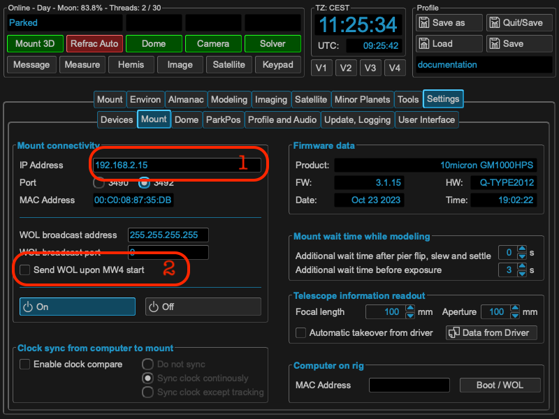
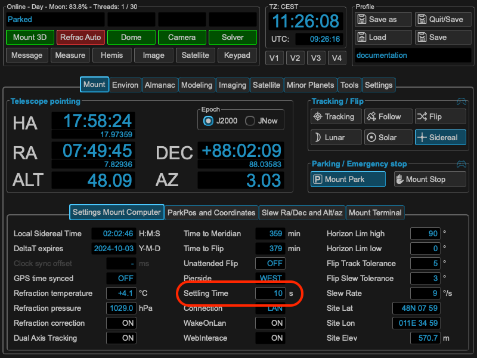
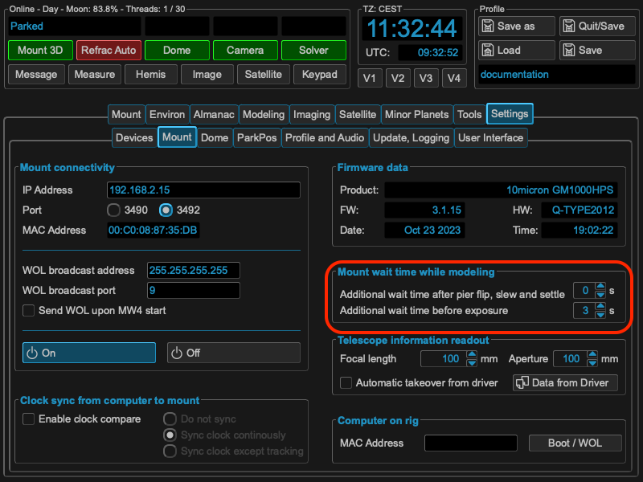

Mount setup¶
Basic connectivity¶
With the first start you have a clean installation. First step should be to enable the mount connectivity. In the settings tab goto Mount and enter under Mount connectivity the IP address of you mount (1). Boot the mount manually and wait until the mount computer is ready.
{kind=link}
MountWizzard4 will show for Mount connection a green light and enters the MAC Address for remote boot via wake-on-lan (WOL). You should select WakeOnLan on startup in the menu (2). All configuration are save when leaving MountWizzard4 with Save/Quit button or just when saving the profile. You can add or change any config later on at any time.
Settling Time / Waiting Time¶
To accommodate several different use cases MountWizzard4 implements additional waiting times to the core settling time, which is implemented and user directly from the mount computer. The following image shows the setting of this parameter, which could be also set and altered through 10micron tools.
{kind=link}
This settling time is valid for all slews and movements of your mount once set. Please have a look to the 10micron spec where this behaviour has to be taken into account. Nevertheless for the modeling part MountWizzard4 add two more parameters as the modeling process need heavy movement of the mount. Therefore MountWizzard4 call these parameters not settling time but waiting time. These parameters could be set under the mount parameters:
{kind=link}
The working principle is as follows: MountWizzard4 initiates a slew. This command is run by the mount computer and takes the internal settling time into account. This means after the mount came to physical stop, the mount computer will send the signal slew finished after this time period (upper image). This is the case in all used cases and will applied also during modeling process.
For the modeling process MountWizzard4 adds a waiting time before moving on after slew, which means waiting the addition set time before starting a next exposure (you know that MountWizzard4 runs asynchron for slew, expose and plate solve to improve speed). The wait is only applied during the modeling process.
Furthermore MountWizzard4 will differentiate if the mount starts and stops on the same pierside or if the was a meridian flip of the mount. For both cases you could set the waiting time.